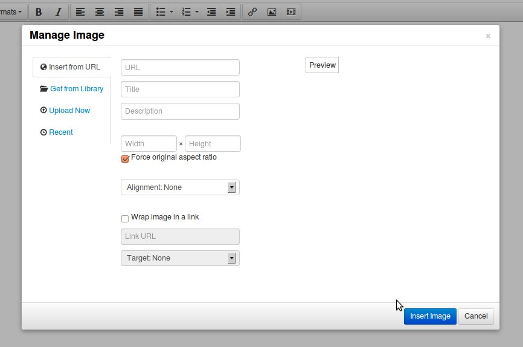
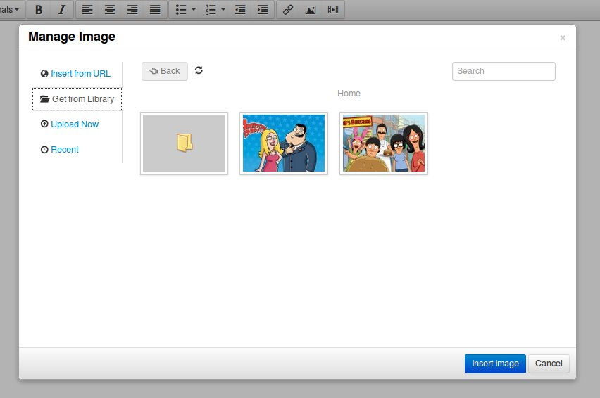
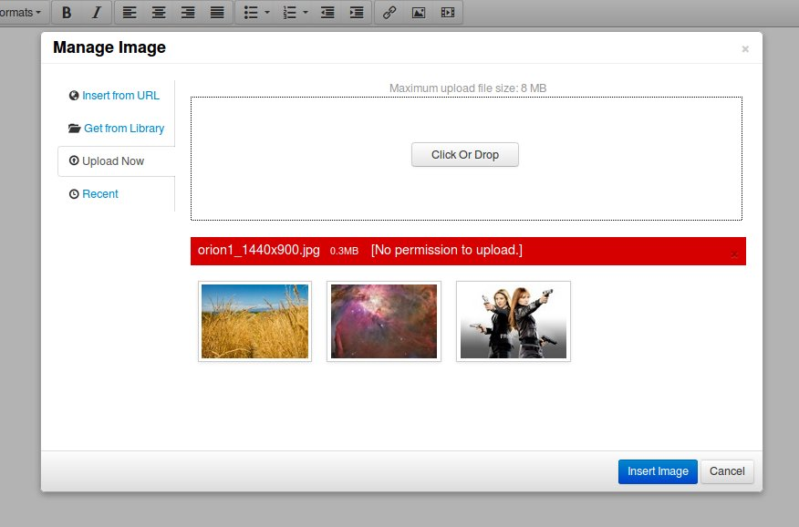
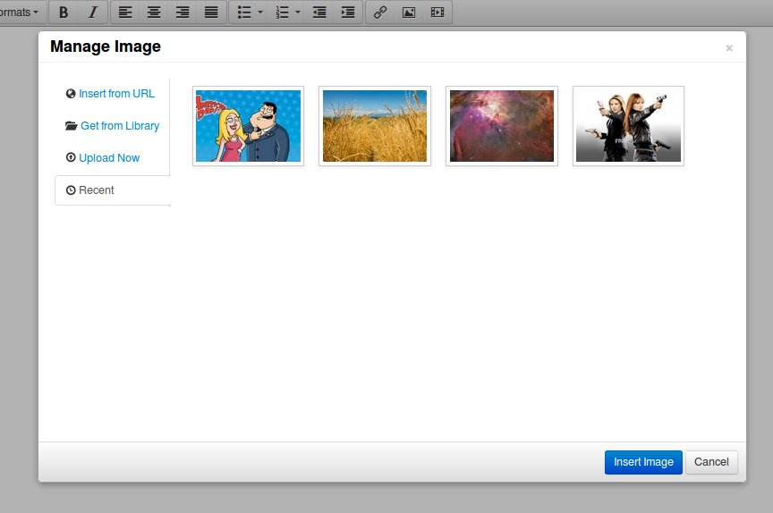

About
This is a TinyMCE plugin that replaces the default one that comes with the editor and makes that editor more useful in CSMs by adding features to it. It makes it easier to added images when using the popular wysiwyg editor. This plugin only works with the updated and stylish TinyMCE 4 versions.
tinymce plugin wysiwyg html editor Images Manage Images CMS
Features:
- Image Preview: When adding an image from a link, the plugin will retrieve the image and show a preview so that you are sure of the image that you are adding.
- Permission: The plugin has a configuration file
config.php that you can use to determine who can upload images or view the defined library of images. User with no permissions can only insert images from links.
- Multiple Uploads: You will be able to upload multiple images at once by selecting them or draging and dropping.
- Ajax Upload: The upload feature uses ajax and so no page refreshing when uploading.
- Recent List of Files: When you insert images from an url or upload the or get them from the library, the plugin in saves them in a session and you can be able to view them the next time you open the dialog for the plugin.
- Define an Image Library: During installation you will be able to define a path to an image library. This will be a folder with images that you can access from the plugin and also the folder to which files are uploaded to.
- Traverse the Library Subfolder: If the library folder has nested subfolders the plugin will be able to handle them.
- Search the Library: This plugin has a search feature for the library that allows you to search it and the subfolders for an image using the image's name.
- Bootstrap CSS and HTML: If you wish to change any of the styling and are familiar with the Twitter Bootstrap framework, you will have no difficulty.
- Image Alignment: When inserting images, you will be able to define the alignment relative to the text around it. The plugin in uses float rather than the align(deprecated in HTML5)
- Wrap Images in a Link: You can easily choose to wrap an image in a link when adding it.
- Image Dimensions: When you add an image it is possible to define the dimension that it will be added with. You can easily keep the image's aspec ratio.
- Quick Install: Just modify the configuration file(if you want) and then upload to the tinymce plugins' folder. That is it.
- Source Code: Nothing is hidden.
Installation
- Unzip the file
- Open the file
config.php and define the library path and url and also the permissions. There are comments in the php file to help you with this.
- Upload the files to the tinymce plugins' folder replacing the default image plugin
Usage
When using the editor, click on the icon to activate the dialog for this plugin.
1. Insert from Url
When you click on the icon to select this plugin you will be presented with a form like the one below.

- URL: this is the url to the img that you want to add. Please use a full url that includes the protocol.
- Title: this is the text that will be displayed when the image is hovered.
- Description: this is the alternative text that will be displayed if the image can not be loaded.
- Width and Height: these are the dimensions that the image will be added with. When you provide a URL these fields are automatically populated. You can change them.
- Force original aspect ratio: when this is check and you change either the width or height, the other dimension will be calculated based in the original aspect ratio of the image.
- Alignment: this is the url to the image that you want to add. Please use a full url that includes the protocol.
- Wrap image in a link: check this if you want to link the image to something.
- Link URL: this is the url to link the image too.
- Target: if the image is wrapped in a link, this determines if the link will be opened in a new window or not when clicked
- Preview: when you input an image url in the first field, the image will be loaded here for preview.
2. Get from Library
When you click on the tab titled "Get from Library" you will be presented with the following.

- Folders: when you click on a folder thumbnail, the content of the folder will be displayed.
- Images: when you click on an image you will be taken to the page for inserting it..
- Back: there is a "Back" button at the top left. When you are in a folder use this to go back up one level at a time.
- Search: you can search for images using the input at the top right. Just type the term you want to search using.
- Refresh: when you click the icon, the contents of the current folder are refreshed.
3. Upload Now
When you click on the tab titled "Upload Now" you will be presented with the following.

- Uploading: click on the button or drag and drop the files in the area with a dotted boarder
- Errors: errors appear in red under the upload are and the reason is in square brackets.
- Success: when an image is uploaded successfully, its thumbnail is displayed under the upload area. You will then need to click on the image and you will be taken to the form for inserting the image.
4. Recent
These are images that you have uploaded or inserted from URL during the current session.
When you click on the tab titled "Recent" you will be presented with the following.
